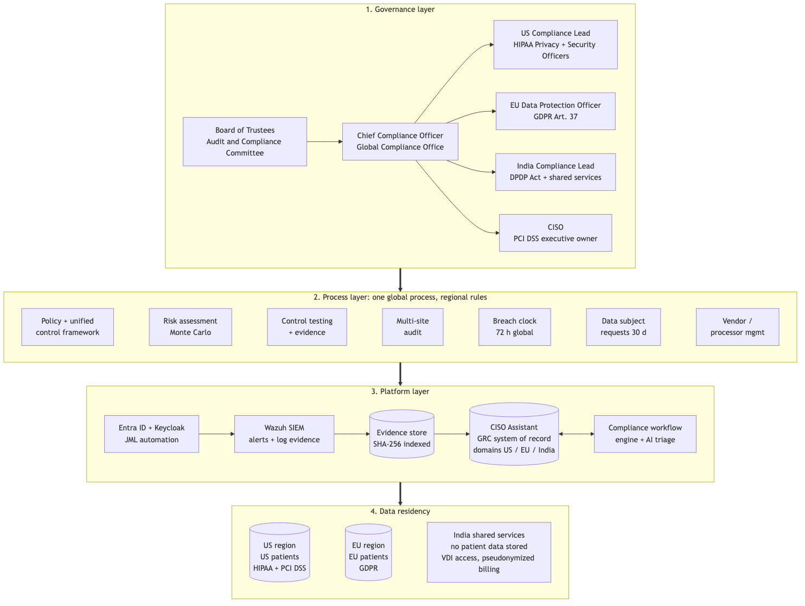
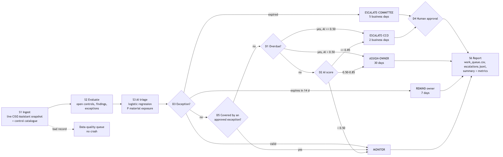
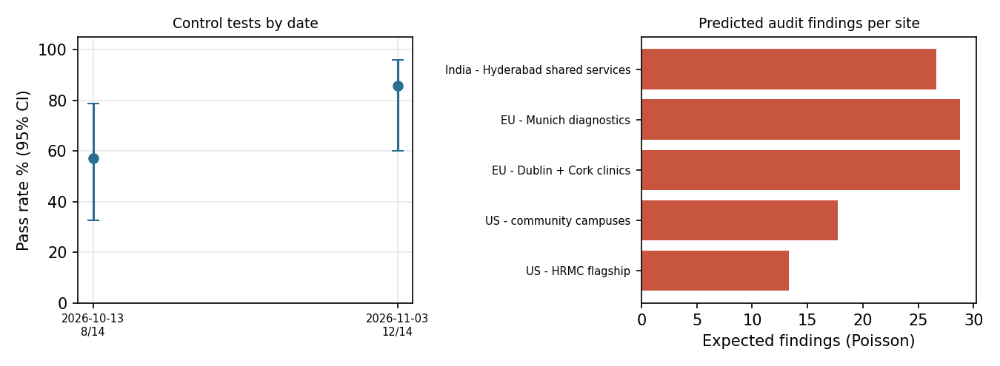
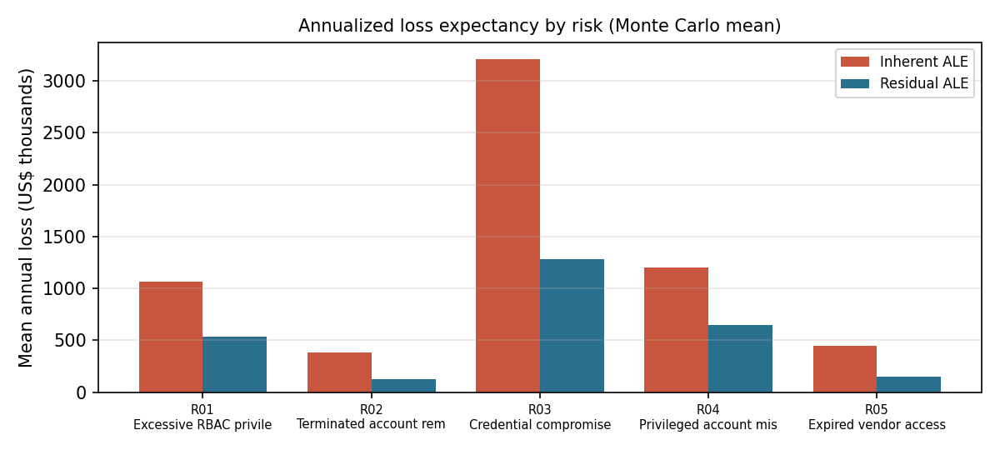
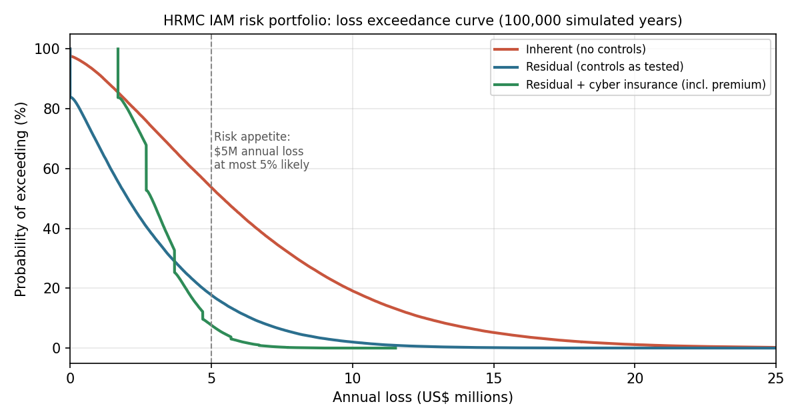
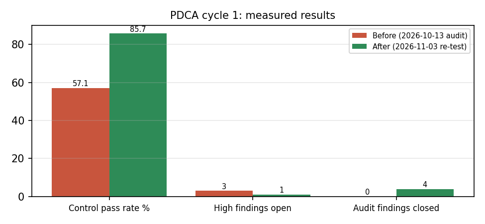

Care Access Navigator
Compliance 2: Final Project Submission
Enterprise compliance program for HRMC's multinational expansion: strategy, automation, process optimization, auditing, quantitative risk and performance
| Prepared by: | Akhila Chennamaneni, IAM & GRC Analyst (author) |
| Organization: | HealthLine Regional Medical Center (HRMC), Care Access Navigator (CAN) capstone |
| Course: | Compliance 2 (DAE 6-Month Cybersecurity, Cohort 2) |
| Scope: | All rubric criteria |
| Environment: | CISO Assistant (live, read-only sync), Python workflow with AI triage, Monte Carlo risk model, capstone evidence |
| Date: | November 18, 2026 |
Scenario. HRMC is the fictional hospital used throughout my capstone (Care Access Navigator). For Compliance 2 it
expands into a multinational group: the US hospital network, clinics in Ireland and Germany, and a shared-services centre in
Hyderabad, India (10,800 staff). Everything measured (controls, audits, timings, logs, risks) comes from my capstone evidence
and live systems; the expansion figures (sites, volumes, budgets, loss ranges) are planning assumptions and are labelled as such.
Executive summary
| Area | Result |
|---|
| Strategy | 6 regulatory conflicts resolved; 3 major frameworks (HIPAA, GDPR, PCI DSS v4.0.1) integrated on an ISO 27001 control backbone; 3-year roadmap, $3,900k total |
| Automation | Live CISO Assistant sync + 6-stage workflow with AI triage (AUC 0.931); 23 open issues routed in 351 ms; caught 2 expired exceptions (EX-06, EX-08) |
| ROI | One-time $128k, payback 7.3 months, 3-year NPV $726k (hard savings), ROI 259% |
| Process | JML provisioning 99.8% faster (measured); lead time per request down 59.9% (target 30%); leaver exposure 12 → 0 min |
| Auditing | 6-week, 5-site audit (virtual + on-site), cross-functional team, binomial sampling, log analytics, predicted findings per site |
| Quantitative risk | Monte Carlo (100,000 years): residual ALE $2.73M, P95 $7.99M; FIDO2 + insurance brings P95 to $4.49M, inside the $5M appetite |
| Performance | 12 KPIs with benchmarks, predictive alerts; PDCA cycle 1 measured: control pass rate 57.1% → 85.7% |
Rubric map
| Rubric criterion | Section |
|---|
| Advanced Compliance Strategy | 1 |
| Compliance Automation Implementation | 2 |
| Process Integration & Optimization | 3 |
| Advanced Auditing Techniques | 4 |
| Quantitative Risk Assessment | 5 |
| Performance Management & Continuous Improvement | 6 |
1. Advanced Compliance Strategy
1.1 Organization and scope
| Region | Entity | Staff | Services | Regulation |
|---|
| US | HRMC flagship hospital, Albany NY (capstone scenario) | 4,900 | Acute care, EHR, patient portal, billing | HIPAA/HITECH, PCI DSS, NY law |
| US | 2 community campuses + outpatient network, NY | 2,500 | Outpatient care, imaging | HIPAA/HITECH, PCI DSS |
| EU | HealthLine Clinics Ireland (Dublin, Cork) | 1,150 | Outpatient + day surgery | GDPR, Irish Data Protection Act 2018 |
| EU | HealthLine Diagnostics Munich, Germany | 750 | Diagnostic imaging + lab | GDPR, BDSG, German health-record law |
| India | HRMC Global Shared Services, Hyderabad | 1,500 | Revenue cycle (billing), IT service desk, 24x7 SOC | DPDP Act 2023 (staff data); contracts for US/EU data |
| Total | 10,800 | | |
In Compliance 1 GDPR was not applicable to HRMC (no EU establishment). The expansion changes that: the Irish and German clinics are EU
establishments, and EU data reaching the US and India becomes an international transfer.
1.2 Regulatory landscape
| Framework | Type | Scope at HRMC |
|---|
| HIPAA Security + Privacy Rules (HITECH breach rule) | US law | All US patient data; vendors under BAAs; India shared services as a business associate |
| EU GDPR (+ Irish DPA 2018, German BDSG) | EU law | All EU patient and staff data; transfers to the US and India |
| PCI DSS v4.0.1 | Card-brand contract | Card payments at US billing and the Hyderabad revenue-cycle team |
| ISO/IEC 27001:2022 (Annex A) | Certifiable standard | Common control backbone for the whole group; target certification 2028 |
| India DPDP Act 2023 + DPDP Rules 2025 | India law | Hyderabad staff data in full; foreign patient data processed under contract: s.17(1)(d) exemption, but s.8(1) and s.8(5) security duties still apply |
The integrated program covers three major frameworks, HIPAA, GDPR and PCI DSS v4.0.1, and uses ISO/IEC 27001:2022 Annex A as the
common control language, so one control is tested once and its evidence satisfies every framework it maps to. India's DPDP Act is handled as a local overlay.
1.3 Conflicting requirements and how they are resolved
| Topic | Conflicting requirements | Resolution |
|---|
| Breach notification clock | GDPR Art. 33: supervisory authority within 72 h of awareness; HIPAA 164.404/408: individuals and HHS without unreasonable delay, no later than 60 days (500+ people); DPDP Rules 2025: report to the Data Protection Board within 72 h; PCI DSS: notify acquirer / card brands immediately | One global incident clock set to the strictest rule: preliminary regulator-ready report within 72 h for every incident involving personal data, HIPAA and card-brand notices issued in parallel well inside 60 days. Clock starts at SOC triage (SOC 1 playbook). |
| Retention vs. erasure | HIPAA 164.316(b)(2): keep compliance documentation 6 years; NY: adult medical records 6 years; Germany BGB 630f: patient records 10 years; GDPR Art. 5(1)(e) storage limitation and Art. 17 erasure; PCI DSS 10.5.1: audit logs 12 months; DPDP s.8(7): erase when the purpose is served | Retention schedule by data class AND jurisdiction of the record, never a single global maximum. Medical records follow the local law; security logs 12 months then deleted; GDPR erasure requests are refused only under Art. 17(3)(b)/(c) with the legal obligation cited. |
| Cross-border transfers | GDPR Chapter V: EU personal data may leave the EU only with adequacy (US: EU-US Data Privacy Framework for certified recipients) or SCCs + transfer impact assessment; India has no EU adequacy decision; DPDP s.16: transfers allowed except to countries the Government restricts; HIPAA: no localisation, but BAAs required | EU patient data stays in an EU tenant. Hyderabad staff work through VDI on pseudonymised billing data; SCCs + transfer impact assessment for EU-to-India access; BAAs for US data; no Indian patient data in scope. |
| Legal basis for processing health data | HIPAA: treatment, payment, operations without authorisation; GDPR Art. 9(2)(h): health care without consent but under professional secrecy; DPDP s.6-7: consent or a listed 'legitimate use' | Purpose-and-basis register per region in CISO Assistant. No reliance on consent where GDPR/HIPAA give a care-delivery basis; consent notices only for Indian staff data and marketing. |
| Patients' and data subjects' access rights | HIPAA 164.524: 30 days (+30 extension); GDPR Art. 15: 1 month (+2 for complex); DPDP s.11: right to information | One request process with a 30-day global target (meets both); extensions only where the local law allows, logged in the tracker. |
| Workforce monitoring vs. employee privacy | PCI DSS 10 and HIPAA 164.312(b) require activity logging and review; GDPR Art. 88 and German BetrVG s.87(1) no. 6 give the works council co-determination over monitoring technology | SIEM monitoring limited to security purposes; works-council agreement in Munich before Wazuh rules go live; pseudonymised analyst views in the EU, names revealed only on escalation (SOC 1 workflow). |
Principle: where rules conflict on time, use the strictest (72 hours, 30 days); where they conflict on data, apply the law
of the record's jurisdiction, never a global maximum; where they conflict on location, keep data in its region and move access, not data.
1.4 Integrated compliance program: unified control mapping
The 16 controls already built and tested in the capstone (CISO Assistant, Week 9 catalogue) are the core. GDPR and DPDP references are added,
and 6 new controls cover what the expansion introduces. The full group set grows to 48 controls by Q1 2027 (workbook sheet Unified_Controls).
| Ctrl | Objective | HIPAA | GDPR | PCI DSS | ISO 27001 | DPDP | Status |
|---|
| AC-01 | Users receive only the access their job requires (RBAC, least privilege) | 164.308(a)(4)(ii)(B); 164.312(a)(1) | Art. 25(2), 32(1)(b) | 7.2.1, 7.2.2 | A.5.15, A.5.18 | s.8(5) | Implemented |
| AC-02 | Terminated users are disabled and all access removed promptly | 164.308(a)(3)(ii)(C) | Art. 32(1)(b), 32(4) | 8.2.5 | A.5.18, A.6.5 | s.8(5) | Implemented |
| AC-03 | Role changes remove old access before new access is granted | 164.308(a)(4)(ii)(C) | Art. 32(4) | 7.2.4 | A.5.18 | s.8(5) | Implemented |
| AC-04 | Each application admits only approved job roles | 164.312(a)(1) | Art. 25(2) | 7.2.1 | A.8.3 | s.8(5) | Implemented |
| AC-05 | Privileged access is approved, limited and monitored | 164.308(a)(4)(ii)(B) | Art. 32(1)(b) | 7.2.2, 8.2.2 | A.8.2 | s.8(5) | Partially implemented |
| IA-01 | Privileged and cardholder-data users pass MFA | 164.312(d) | Art. 32(1)(b) | 8.4.1, 8.4.2 | A.8.5 | s.8(5) | Partially implemented |
| IA-02 | Lockout after repeated failures; strong password standard | 164.308(a)(5)(ii)(D) | Art. 32(1)(b) | 8.3.4, 8.3.6, 8.3.7 | A.5.17, A.8.5 | s.8(5) | Implemented |
| AR-01 | Access is reviewed periodically and findings are remediated | 164.308(a)(4)(ii)(C); 164.308(a)(1)(ii)(D) | Art. 32(1)(d) | 7.2.4, 7.2.5.1 | A.5.18 | s.8(5) | Partially implemented |
| VM-01 | Vendor access is sponsored, time-boxed and removed at expiry | 164.308(b)(1); 164.314(a) | Art. 28 | 8.2.7 | A.5.19, A.5.20 | s.8(2) | Partially implemented |
| AU-01 | Security-relevant identity events are logged | 164.312(b) | Art. 5(2), 32(1)(d) | 10.2.1 | A.8.15 | s.8(5) | Implemented |
| AU-02 | Alerts are raised and investigated | 164.308(a)(1)(ii)(D); 164.308(a)(6)(ii) | Art. 33(1) | 10.4.1 | A.8.16 | s.8(6) | Implemented |
| AU-03 | Security logs are kept 12 months | 164.316(b)(2) (policy); 164.312(b) | Art. 5(1)(e) (conflict: storage limitation) | 10.5.1 | A.8.15 | s.8(7) | Not implemented |
| IR-01 | Incidents are handled with a tested playbook | 164.308(a)(6)(i)-(ii) | Art. 33, 34 | 12.10.1 | A.5.24-A.5.28 | s.8(6) + Rules | Implemented |
| RA-01 | Security risks are identified, scored and treated | 164.308(a)(1)(ii)(A)-(B) | Art. 32(2), 35 (DPIA) | 12.3.1 | Clause 6.1.2, 6.1.3 | s.10 (SDF DPIA) | Implemented |
| CA-01 | Control gaps are tracked to verified remediation | 164.308(a)(8) | Art. 5(2), 24(1) | 12.4.2 | Clause 10.2 | s.8(1) | Implemented |
| SC-01 | ePHI and credentials are encrypted in transit (TLS 1.2+) | 164.312(e)(1), (e)(2)(ii) | Art. 32(1)(a) | 4.2.1 | A.8.24 | s.8(5) | Partially implemented |
| PR-01 | Record of processing activities per region | - | Art. 30 | - | A.5.34 | s.8(1) | Planned 2027 |
| PR-02 | Data protection impact assessment before new high-risk processing | 164.308(a)(1) | Art. 35 | - | A.5.34 | s.10 | Planned 2027 |
| PR-03 | Cross-border transfer control (SCCs, TIA, DPF check) | BAA 164.308(b) | Art. 44-46 | - | A.5.14 | s.16 | Planned 2027 |
| PR-04 | Data subject / patient access request process (30 days) | 164.524 | Art. 12, 15 | - | A.5.34 | s.11 | Planned 2027 |
| PR-05 | Retention schedule by data class and jurisdiction | 164.316(b)(2) | Art. 5(1)(e), 17 | 3.2.1, 10.5.1 | A.5.33 | s.8(7) | Planned 2027 |
| PR-06 | Global 72-hour breach clock | 164.404-410 | Art. 33, 34 | 12.10.1 | A.5.26 | s.8(6) | Planned 2027 |
1.5 Enterprise compliance architecture (10,000+ staff, multiple locations)

Source: diagrams/compliance_architecture.mmd
| Layer | Design for scale |
|---|
| Governance | Board committee → CCO → regional leads (US HIPAA officers, EU DPO, India lead) + CISO for PCI DSS. 43 compliance champions (1 per 250 staff) in departments. |
| Process | One global process per topic (risk, testing, audit, breach, DSAR, vendors) with regional rule tables, so a new site plugs into existing processes. |
| Platform | Federated identity (Entra ID + Keycloak) so 10,800 joiners/movers/leavers are automated; Wazuh for log evidence; CISO Assistant with one domain per region as the system of record; the workflow engine reads it continuously. |
| Data | Regional residency: US data in the US, EU data in the EU; Hyderabad has no patient data at rest and works through VDI on pseudonymised billing data. |
1.6 Three-year strategic roadmap
| Phase | When | Milestones | Owner | FTE | Budget |
|---|
| Year 1 - Foundation (2027) | Q1 2027 | Global Compliance Committee + CCO charter; EU DPO appointed (GDPR Art. 37); unified control framework v1 (48 controls) approved | CCO | 6 | $420k |
| Year 1 - Foundation (2027) | Q2 2027 | CISO Assistant domains US/EU/India; compliance workflow + AI triage live for the US; RoPA and DPIAs for EU sites | GRC Lead | 8 | $380k |
| Year 1 - Foundation (2027) | Q3 2027 | Keycloak/Entra JML automation extended to EU + India; SCCs + transfer impact assessments signed; works-council agreement (Munich) | IAM Lead + DPO | 10 | $450k |
| Year 1 - Foundation (2027) | Q4 2027 | First multi-site audit (5 sites); PCI DSS v4.0.1 assessment; ISO 27001 gap assessment | Internal Audit | 10 | $520k |
| Year 2 - Integration (2028) | Q1-Q2 2028 | ISO 27001 stage 1 + stage 2 certification for the group ISMS; FIDO2 MFA for all ePHI roles (risk option) | CISO | 9 | $650k |
| Year 2 - Integration (2028) | Q3-Q4 2028 | Continuous control monitoring for 60% of controls; predictive KPIs in the board dashboard; Hyderabad 24x7 SOC on Wazuh | GRC Lead + SOC Manager | 9 | $600k |
| Year 3 - Optimization (2029) | Q1-Q2 2029 | 80% of controls tested automatically; NIST CSF Tier 3 'Repeatable' across sites; surveillance audit | CCO | 7 | $480k |
| Year 3 - Optimization (2029) | Q3-Q4 2029 | Second PDCA cycle review; model re-validation; roadmap 2030-2032 | CCO + Board committee | 6 | $400k |
| Total 2027-2029 | | | | | $3,900k |
Budgets cover people, audits, certification, tooling and training (planning assumptions). The compliance automation in section 2 is part of the
Q2 2027 line. Milestones are gated: Year 2 starts only when the Year 1 multi-site audit shows no open High findings older than 90 days.
2. Compliance Automation Implementation
2.1 Tools implemented
| Tool | What it automates | Status |
|---|
| CISO Assistant (live sync) | automation/ciso_sync_export.py exports controls, exceptions, findings, risks and audit results read-only from the GRC system of record | Implemented; snapshot 2026-11-18: 18 controls, 8 exceptions, 19 findings |
| Compliance workflow engine | automation/compliance_workflow.py: 6 stages, 5 decision points, AI triage, exception handling, escalation with SLAs | Implemented; 23 issues in 351 ms |
| JML automation | can_iam.py joiner / mover / leaver with verification and JSONL audit log (capstone) | Implemented (EV-14) |
| Wazuh SIEM | Log evidence and alerting for monitoring controls (SOC 1 lab) | Implemented |
2.2 Multi-stage workflow with automated decision points

Source: diagrams/compliance_workflow.mmd
| Stage / decision | Logic |
|---|
| S1 Ingest | Live CISO Assistant snapshot + capstone control catalogue. A malformed record goes to a data-quality queue instead of stopping the run. |
| S2 Evaluate | Open issues = controls not fully implemented or failing, unresolved findings, open exceptions |
| S3 AI triage | Probability that the issue is a material compliance exposure (section 2.4) |
| D3 Exception status | Expired → ESCALATE-COMMITTEE (5 business days); expires within 14 days → REMIND; valid → MONITOR |
| D5 Covered by exception? | If an approved, unexpired exception with compensating controls covers the control → MONITOR (prevents escalation overload) |
| D1 Overdue? | Past due and AI ≥ 0.50 → ESCALATE-CCO (2 business days); else ASSIGN-OWNER |
| D2 AI score band | ≥ 0.85 ESCALATE-CCO; 0.50-0.85 ASSIGN-OWNER (30 days); < 0.50 MONITOR |
| D4 Human approval | Every escalation needs a named approver before it is sent: the AI recommends, people decide |
| S6 Report | work_queue.csv, escalations.jsonl, workflow_summary.json |
2.3 Run on live data (2026-11-18)
| Route | Count |
|---|
| ESCALATE-COMMITTEE | 2 |
| ESCALATE-CCO | 1 |
| REMIND | 1 |
| ASSIGN-OWNER | 8 |
| MONITOR | 11 |
| ID | Type | Control | AI score | Path | Route | Reason |
|---|
| EX-06 | exception | IR-01 | 0.61 | S2>S3>D3>D4 | ESCALATE-COMMITTEE | exception expired 13 days ago: renew with new evidence or close |
| EX-08 | exception | CA-01 | 0.61 | S2>S3>D3>D4 | ESCALATE-COMMITTEE | exception expired 13 days ago: renew with new evidence or close |
| CA-15 | finding | IA-01 | 0.88 | S2>S3>D2>D4 | ESCALATE-CCO | AI score 0.88 >= 0.85 |
| EX-07 | exception | IA-02 | 0.71 | S2>S3>D3 | REMIND | exception expires in 13 days |
| CAN-FIND-001 | finding | AC-02 | 0.8 | S2>S3>D2 | ASSIGN-OWNER | AI score 0.80 in 0.50-0.85 |
| CA-08 | finding | VM-01 | 0.76 | S2>S3>D2 | ASSIGN-OWNER | AI score 0.76 in 0.50-0.85 |
| IA-01 | control | IA-01 | 0.71 | S2>S3>D2 | ASSIGN-OWNER | AI score 0.71 in 0.50-0.85 |
| AU-03 | control | AU-03 | 0.97 | S2>S3>D5 | MONITOR | covered by approved exception EX-02 until 2027-01-31; compensating controls in place |
| CA-03 | finding | AU-03 | 0.88 | S2>S3>D5 | MONITOR | covered by approved exception EX-02 until 2027-01-31; compensating controls in place |
What the automation caught: exceptions EX-06 and EX-08 expired on 2026-11-05 while still "in review". A manual weekly register check had not
flagged them; the workflow escalated both to the compliance committee on its first run. Before the D5 rule was added, the first version escalated 13 issues to the CCO;
tuning it to respect approved exceptions cut that to 1, which is the kind of alert-fatigue control an enterprise program needs.
2.4 AI integration
| Item | Detail |
|---|
| Model | Logistic regression, 6 features: inherent_risk, frameworks, ephi, days_overdue, prior_fail, impl_gap; implemented without external libraries |
| Training data | 560 labelled historical issues (synthetic history representing past committee decisions); 240 held out |
| Quality | Accuracy 0.808, precision 0.769, recall 0.904, AUC 0.931 |
| Weights | bias -5.41, inherent_risk 2.74, frameworks 1.71, ephi 1.24, days_overdue 3.2, prior_fail 1.6, impl_gap 2.28 (overdue days and inherent risk weigh most) |
| Governance | Human approval on every escalation (D4); decisions concern compliance issues, not individuals, so GDPR Art. 22 automated-decision rules are not triggered, which the DPIA records; quarterly retraining on real committee outcomes; drift check = AUC below 0.85 triggers review |
2.5 Exception handling and escalation procedures
| Situation | Automated handling | Escalation |
|---|
| Bad or missing data in a record | Logged to the data-quality queue; the run continues | GRC analyst fixes the source record in CISO Assistant |
| Exception expiring in 14 days or less | REMIND owner | If not renewed by expiry → committee |
| Exception expired | ESCALATE-COMMITTEE, 5 business days | Committee renews with new evidence or closes it |
| Finding overdue, AI ≥ 0.50 | ESCALATE-CCO, 2 business days | CCO re-plans or accepts risk formally |
| Escalation not acted on within SLA | Re-raised on the next run with SLA breached | Board audit and compliance committee report |
2.6 Costs, savings, ROI and payback
| One-time cost | USD |
|---|
| Workflow engine + AI triage build (320 h) | $27,200 |
| CISO Assistant deployment + data sync (160 h) | $13,600 |
| SIEM (Wazuh) integration (120 h) | $10,200 |
| JML automation hardening for 3 regions (200 h) | $17,000 |
| Training: 200 staff x 1 h | $12,000 |
| Program + change management (300 h) | $28,500 |
| Privacy review of the AI step: GDPR Art. 22 / DPIA (60 h) | $9,000 |
| Validation testing of the automation (120 h) | $10,200 |
| Open-source licences (CISO Assistant CE, Wazuh, Keycloak) | $0 |
| Total one-time | $127,700 |
| Annual cost | USD |
|---|
| Hosting: 3 VMs / containers | $9,000 |
| Platform administration (0.5 FTE) | $55,000 |
| Model retraining and rule tuning (80 h) | $6,800 |
| Total annual | $70,800 |
| Annual operational saving (full adoption) | USD |
|---|
| JML touch time | $317,717 |
| Control testing and evidence collection | $65,520 |
| Access review preparation | $50,400 |
| External audit preparation | $36,000 |
| Total | $469,637 |
JML saving: 4,968 joiner/mover/leaver events a year × (72.3 − 2.6) minutes,
using the provisioning times measured in section 3. About 7,985 staff hours are freed each year. Year 1 assumes 60% adoption while the EU and India sites onboard.
| Measure | Hard savings only | Including credited risk reduction |
|---|
| Payback | 7.3 months | - |
| 3-year NPV (8%) | $726,202 | $1,030,898 |
| 3-year ROI | 259% | - |

Cumulative cash position (roi_model.py). Risk credit = 25% of the modelled R02 + R05 loss reduction (section 5).
3. Process Integration & Optimization
3.1 Integrated compliance platform with data synchronization
| Flow | From → To | Sync method | Frequency |
|---|
| Identity events | Keycloak / Entra → Wazuh | Event export + log collection (SOC 1 lab) | Real time |
| JML actions | can_iam.py → audit log → evidence store | Append-only JSONL, SHA-256 indexed | Per action |
| GRC registers | CISO Assistant → workflow engine | Read-only export (ciso_sync_export.py) | On demand / hourly schedule |
| Decisions | Workflow engine → owners, CCO, committee | Work queue + escalation log | Every run |
| Evidence + results | Evidence store → CISO Assistant | Loader (load_ciso.py, upsert by ref_id: no duplicates) | After each test cycle |
3.2 Method (DMAIC)
- Define: the access-request (joiner / mover / leaver) process, the most frequent compliance-relevant process (about 4,968 events a year at group scale).
- Measure: baseline from the manual run on 2026-10-19 (JML evidence timestamps).
- Analyze: waste = re-keying in two systems, manual verification, screenshots for evidence; defect = the leaver's Keycloak copy kept the billing role (CA-09).
- Improve: automate provisioning + verification + evidence in one step (can_iam.py); approvals in the workflow.
- Control: end-to-end tests TC-01 to TC-10, KPI on leaver timeliness, workflow monitoring.
3.3 Baseline measurements and results
| Event | Manual 2026-10-19 (measured) | Automated 2026-11-03 (measured) |
|---|
| Joiner | 47.0 min | 7 s |
| Mover | 20.0 min | 3 s |
| Leaver | 15.0 min | 2 s |
| Step per request | Baseline h | Optimized h | Basis |
|---|
| Request intake (email / form) | 4.0 | 0.5 | assumption: email triage vs. structured form |
| Manager approval | 16.0 | 8.0 | assumption: approval inside the workflow with reminder |
| Provisioning in Entra + Keycloak (avg of J/M/L) | 0.456 | 0.0011 | MEASURED |
| Verification of access | 0.25 | 0.0 | baseline: manual check (measured part of JML evidence); optimized: automatic in can_iam |
| Evidence filing for audit | 0.5 | 0.0 | assumption: screenshots + register vs. automatic JSONL audit log |
| Measure | Baseline | Optimized | Change |
|---|
| Provisioning time (measured) | 27.3 min avg | 4 s avg | −99.8% |
| Touch time per request | 1.21 h | 0.001 h | −99.9% |
| Lead time per request | 21.21 h | 8.5 h | −59.9% (target 30%) |
| Errors | 1/3 | 0/3 (plus 6 more JML checks in TC-01..TC-09, all PASS) | defect removed |
| Leaver exposure window | 12 min | 0 min | eliminated |

Measured provisioning time and modelled lead/touch time (process_optimization.py)
The 30% target is met on the most conservative measure (lead time, which still contains assumed approval waiting time). The efficiency
claim does not depend on the assumptions: provisioning alone is measured.
3.4 Validation procedures
- TC-01 joiner, TC-02 least privilege, TC-03 mover, TC-04 leaver all PASS on 2026-11-03 (EV-14)
- KPI 'leaver deprovisioned and verified within 24 h' = 100% for automated leavers
- Re-run of can_iam.py verify on 2026-11-17: clinician DENIED on billing-app, billing MFA_REQUIRED
- Repeat the measurement at every quarterly access review; publish the KPI in the board pack (section 6).
4. Advanced Auditing Techniques
4.1 Multi-site audit plan (Q4 2027, 6 weeks)
| Site | Mode | When | Focus | Sample |
|---|
| US - HRMC flagship (Albany) | On-site | Week 1-2 | IAM / JML, EHR access, PCI cardholder flows | 93 access events; 59 JML tickets |
| US - community campuses | Virtual | Week 2 | Access reviews, workstation controls (photo evidence) | 59 accounts |
| EU - Dublin + Cork | Virtual + 1 day on-site | Week 3 | GDPR RoPA, DPIAs, SCC transfers, DSAR log | All transfers; 59 DSARs |
| EU - Munich diagnostics | On-site | Week 4 | German retention (10 y), works-council monitoring scope | 59 records |
| India - Hyderabad shared services | Virtual (VDI walkthrough) | Week 5 | PCI DSS for billing, DPDP staff data, pseudonymisation | 93 billing transactions |
| Group - consolidated | Virtual | Week 6 | Report, findings to CISO Assistant, board summary | - |
Virtual techniques: screen-share walkthroughs, evidence requests through CISO Assistant, VDI observation in Hyderabad, live queries on Wazuh.
On-site techniques: workstation and badge checks, observation of clinical access, interviews, re-performance of a leaver.
Common basis: one audit program, the unified controls (1.4), one evidence standard (hashed files linked to the control).
4.2 Cross-functional audit team
| Role | Who | Responsibility |
|---|
| Lead auditor (GRC) | Akhila Chennamaneni | Plan, sampling, analytics, report |
| IT / IAM auditor | Internal Audit | Keycloak, Entra, Wazuh, change logs |
| Operational compliance (clinical) | Nursing quality lead | Workflows, minimum-necessary use of records |
| Financial compliance | Revenue-cycle controller | PCI DSS, billing reconciliations |
| Privacy | EU DPO + US Privacy Officer | GDPR / HIPAA privacy, DSARs, transfers |
| Regional SMEs | Site IT leads (US, IE, DE, IN) | Evidence access, interviews, walkthroughs |
IT, operational and financial compliance are each covered by a team member who owns that part of the report; the lead auditor consolidates.
4.3 Statistical sampling
| Confidence | Tolerable deviation | Deviations allowed | Sample size |
|---|
| 95% | 5% | 0 | 59 |
| 95% | 5% | 1 | 93 |
| 95% | 5% | 2 | 124 |
| 90% | 5% | 1 | 77 |
| 95% | 10% | 1 | 46 |
Exact binomial attribute sampling: the smallest n where the chance of seeing no more than the allowed deviations, if the true rate were the tolerable rate, is below 5%.
Example: 59 items with zero deviations give 95% confidence the deviation rate is under 5%.
4.4 Evidence analysis with data analytics
| Analysis (real capstone data) | Result |
|---|
| EHR access by role (90 events) | Billing role: 18 clinical views = 20.0% (95% CI 13.0-29.4%). Expected 0: each is a least-privilege exception to test. |
| Sign-in failures per user (z-score) | Outliers z > 2: test.vendor1 (44 failures, z = 2.22). Explained: the lockout test account. |
| Control test pass rate with confidence intervals | 2026-10-13: 8/14 = 57.1% (95% CI 32.6-78.6%); 2026-11-03: 12/14 = 85.7% (95% CI 60.1-96.0%). The intervals overlap because the sample is small: retest with more items before claiming the improvement statistically. |

audit_analytics.py: control-test pass rate with 95% CI, and predicted findings per site
4.5 Predictive analytics and automated reporting
| Site | Controls | Maturity factor | Expected findings | 90% interval |
|---|
| US - HRMC flagship (Albany, NY) | 48 | 0.6 | 13.3 | 8-20 |
| US - community campuses (2) | 48 | 0.8 | 17.7 | 11-25 |
| EU - Dublin + Cork clinics | 48 | 1.3 | 28.8 | 20-38 |
| EU - Munich diagnostics | 48 | 1.3 | 28.8 | 20-38 |
| India - Hyderabad shared services | 48 | 1.2 | 26.6 | 18-35 |
Findings are modelled as Poisson: the capstone audit found 0.462 findings per control tested, scaled by site maturity
(EU and India sites are newer to HRMC controls). The forecast sets audit staffing: the EU weeks get two auditors.
Corrective-action forecast (live CISO Assistant data): 9 of 18 closed (50.0%), 1.75 per week since the 2026-10-13 audit;
at that rate 90% closure is reached around 2026-12-20. Predicted at risk in the next 14 days: CA-08, CA-12, CA-13, CA-17.
Automated reporting: audit_analytics.py writes outputs/audit_analytics_report.md on every run (sampling plan, analytics, predictions), so the audit pack is regenerated from data, not retyped.
5. Quantitative Risk Assessment
5.1 Method
FAIR-style Monte Carlo simulation (analysis/risk_monte_carlo.py, 100,000 simulated years, seed 42). For each capstone risk:
annual loss = sum of N loss events, where N is Poisson with a rate drawn from a triangular distribution, and each event's loss is drawn from a PERT distribution.
This builds on Risk Management 1, which used single-point ALE (e.g. asset $100,000 × EF 0.30 = SLE $30,000; ARO 0.5 → ALE $15,000) and a business impact analysis
(Keycloak IAM outage $25,000 for the flagship). Simulation replaces single points with ranges and gives percentiles, not just an average.
5.2 Inputs (from the capstone register + planning assumptions)
| Risk | Register inherent → residual | Events/yr (mode) | Loss per event: min / likely / max | Annual treatment cost |
|---|
| R01 Excessive RBAC privileges | 20 → 10 | 0.8 | $50k / $400k / $4.00M | $180k |
| R02 Terminated account remains active | 15 → 5 | 0.4 | $30k / $250k / $3.00M | $120k |
| R03 Credential compromise | 20 → 10 | 0.8 | $150k / $1,200k / $12.00M | $260k |
| R04 Privileged account misuse | 15 → 10 | 0.4 | $100k / $900k / $9.00M | $220k |
| R05 Expired vendor access | 12 → 4 | 0.4 | $40k / $300k / $3.50M | $60k |
Frequency mode comes from the register likelihood (3 → 0.4/yr, 4 → 0.8/yr), with the range 0.25× to 3× the mode. Residual frequency = inherent × (residual score ÷ inherent score),
taken straight from the CISO Assistant register; detective controls (R03, R04) also cut loss size by 20%. Loss ranges include response, notification, regulatory penalties
(HIPAA civil penalty tiers; GDPR fines up to €20M or 4% of worldwide turnover) and litigation. They are calibrated estimates for planning, not actuarial data.
5.3 Results by risk
| Risk | Inherent ALE (mean) | Inherent P90 | Residual ALE (mean) | Residual P90 | Reduction | Cost | ROSI |
|---|
| R01 Excessive RBAC privileges | $1,064k | $2,839k | $534k | $1,797k | $530k | $180k | 195% |
| R02 Terminated account remains active | $381k | $1,289k | $128k | $524k | $253k | $120k | 111% |
| R03 Credential compromise | $3,211k | $8,527k | $1,278k | $4,318k | $1,933k | $260k | 643% |
| R04 Privileged account misuse | $1,203k | $4,043k | $645k | $2,474k | $558k | $220k | 153% |
| R05 Expired vendor access | $448k | $1,518k | $149k | $606k | $299k | $60k | 399% |

Mean annualized loss by risk, inherent vs residual
ROSI = (risk reduction − treatment cost) ÷ treatment cost. Every treatment pays for itself; credential compromise (R03) is both the largest risk and the best investment.
The 95% confidence interval on each mean is narrow (e.g. R03 residual 1,264,990 - 1,291,107), so 100,000 iterations are enough.
5.4 Portfolio view and risk appetite
| Position | Mean | P50 | P90 | P95 | P99 |
|---|
| Inherent | $6.31M | $5.42M | $12.58M | $15.15M | $20.53M |
| Residual (controls as tested) | $2.73M | $2.04M | $6.42M | $7.99M | $11.37M |

Loss exceedance curve: chance that the annual IAM-related loss exceeds a given amount
Risk appetite (proposed to the board): Annual IAM-related loss above $5M should be no more than 5% likely (P95 <= $5M). Inherent and residual positions are both outside appetite.
5.5 Scenario analysis
| Scenario | Assumption | Mean | P90 | P95 | P99 |
|---|
| S0 Baseline (residual, controls as tested) | Register residual scores | $2.73M | $6.38M | $7.95M | $11.25M |
| S1 Expansion year 1 (EU + India sites not yet at HRMC control level) | Frequency x1.5 for privilege, credential and vendor risks | $3.70M | $8.06M | $9.89M | $13.67M |
| S2 Major breach stress (GDPR + HIPAA penalties, class action) | Loss per event x2 for credential compromise and privileged misuse | $4.67M | $11.68M | $14.73M | $21.48M |
| S3 Controls fail (MFA / JML automation outage for a year) | Residual reduction lost for R02, R03 | $4.27M | $9.08M | $11.06M | $15.24M |
The expansion itself (S1) raises expected loss by about $0.97M a year until the new sites reach HRMC's control level: the reason the roadmap
extends JML automation to the EU and India in Q3 2027, before anything else.
5.6 Risk treatment strategy, transfer and residual risk plan
| Option | Added annual cost | Expected annual loss + added cost | P95 annual loss + added cost | Within appetite? |
|---|
| A. Accept residual (current controls) | none (existing controls $840k already in place for all options) | $2.73M | $7.99M | No |
| B. Transfer: cyber insurance ($1M retention, $10M limit per event) | premium $1.70M | $3.17M | $5.43M | No (just above) |
| C. Mitigate + transfer: FIDO2 MFA for ePHI roles, then insure (recommended) | +$150k control, premium $1.18M | $2.55M | $4.49M | Yes |
Insurance premiums are priced at expected covered loss × 1.35 (insurer expenses and profit), so insurance alone costs more than it saves on average; its value is cutting the tail.
Option C lowers both the average and the tail, because the extra control shrinks what the insurer has to cover.
Residual risk management plan: (1) Board accepts option C and the appetite statement; (2) FIDO2 rollout in the 2028 roadmap, insurance bound for 2027;
(3) R02 stays residual Moderate through JML automation (CAN-FIND-001 automatic deprovisioning closes the last gap); (4) triggers for re-assessment: scenario S1 or S3 conditions,
a SEV-1 incident, or the model's P95 moving above $5M; (5) the model is re-run each quarter with updated register scores from CISO Assistant.
6. Performance Management & Continuous Improvement
6.1 KPI framework with benchmarks
| Category | KPI | Current (live) | Target | Benchmark / reference |
|---|
| Compliance | HIPAA requirements fully compliant | 68.0% (17/25) | >= 90% by Q4 2027 | HHS OCR audit protocol: every addressable spec documented |
| Compliance | NIST CSF 2.0 subcategories met | 66.7% (10/15) | Tier 3 'Repeatable' by 2028 | NIST CSF implementation tiers 1-4 |
| Control | Control test pass rate | 85.7% (12/14, 2026-11-03) | >= 95% | Internal target; first audit was 57.1% |
| Remediation | Corrective actions closed | 50.0% (9/18) | >= 90% | Forecast to reach 90% on 2026-12-20 |
| Remediation | Corrective actions overdue | 0 | 0 | Zero tolerance for overdue Highs |
| Governance | Exceptions past expiry | 2 (EX-06, EX-08) | 0 | Every exception renewed or closed before expiry |
| Operational | Leaver exposure window | 0 min automated (manual was 12 min) | 0 min; <= 24 h at worst | PCI DSS 8.2.5: revoke immediately; HIPAA 164.308(a)(3)(ii)(C) |
| Operational | JML provisioning time | 4 s automated | < 5 min | Manual baseline 27.3 min |
| Operational | Compliance workflow run time | 351 ms for 23 issues | < 60 s | Replaces a weekly manual register review (about 4 h) |
| Risk | Residual annual IAM loss, P95 | $8.0M (with FIDO2 + insurance $4.5M) | <= $5M (appetite) | IBM Cost of a Data Breach 2025: healthcare average US$7.42M per breach |
| Risk | AI triage model quality | 0.931 (accuracy 0.808) | >= 0.85 | Retrain quarterly; human approval on every escalation |
| Incident | First response to SEV-1 | 4.2 min (SOC1-2026-001) | <= 15 min | IR playbook CAN-IR-PB-02; GDPR 72 h / HIPAA 60-day notice clocks |
Formulas for every KPI are in the workbook (KPI_Framework). Industry reference points: IBM Cost of a Data Breach Report 2025 (healthcare remains the costliest industry,
about US$7.4M per breach); regulatory clocks (GDPR 72 h, HIPAA 60 days); NIST CSF 2.0 implementation tiers for maturity.
6.2 Advanced monitoring with predictive capabilities and automated review
| Monitor | Predictive / automated element | Current output |
|---|
| Compliance workflow (daily) | AI score predicts which issues become material exposures | 2 committee, 1 CCO, 8 owner, 11 monitor |
| Corrective-action burn-down (weekly) | Closure-rate forecast; items due within 14 days flagged before they slip | 90% closure forecast 2026-12-20; at risk: CA-08, CA-12, CA-13, CA-17 |
| Exception expiry (daily) | Reminder 14 days ahead; automatic committee escalation at expiry | Expired now: EX-06, EX-08 |
| Risk model (quarterly) | Monte Carlo P95 vs appetite; scenario stress | Residual P95 $7.99M |
| Audit forecast (annual) | Poisson findings forecast per site sets audit staffing | EU sites highest |
| Security operations (real time) | Wazuh correlation rules, email escalation (SOC 1) | 33 alert emails routed in the SOC 1 lab |
Automated review process: each Monday the workflow and analytics scripts run, the work queue and audit report regenerate, and the CCO reviews only the escalations;
monthly, the KPI table goes to the compliance committee; quarterly, the board sees KPIs, the loss exceedance curve and roadmap status.
6.3 Continuous improvement program (PDCA) with measured results
| PDCA | Cycle 1 (Oct-Nov 2026, measured) |
|---|
| Plan | Compliance 1 internal audit CAN-IA-2026-01 (2026-10-13): 6 findings (F-01..F-06), 3 High |
| Do | Week 5 hardening: MFA for privileged roles, lockout, 12-char passwords, app gates (EV-13) |
| Check | Re-test 2026-11-03 and access review signed 2026-11-09: control pass rate 57.1% -> 85.7%; High findings 3 -> 1; 4 of 6 findings closed with evidence; E2E 9/10 then 10/10 after CA-10 |
| Act | Remaining gaps governed as exceptions (EX-02, EX-05) with expiry dates; corrective actions tracked in CISO Assistant |

Measured improvement: +28.6 percentage points in control pass rate in one cycle
| Cycle 2 (2027) | Plan |
|---|
| Plan | Targets from section 6.1; close EX-06 / EX-08 decisions; automatic Keycloak deprovisioning (CAN-FIND-001) |
| Do | Extend automation to EU + India; FIDO2 pilot; works-council agreement |
| Check | First multi-site audit (section 4); compare actual findings with the Poisson forecast to calibrate it |
| Act | Re-weight the AI triage model on real committee outcomes; update the unified control set; feed lessons into the 2028 roadmap |
Files and reproduction
| Path (repository folder compliance_2/) | Content |
|---|
| automation/ciso_sync_export.py | Read-only live export from CISO Assistant |
| automation/compliance_workflow.py | Workflow, AI triage, exception handling, escalation |
| analysis/risk_monte_carlo.py | Monte Carlo, scenarios, insurance, ROSI |
| analysis/process_optimization.py | Measured baseline vs automated JML |
| analysis/roi_model.py | Costs, savings, payback, NPV |
| analysis/audit_analytics.py | Sampling, analytics, predictions, automated report |
| analysis/kpi_performance.py | KPI framework, predictive alerts, PDCA results |
| build/content.py | Sites, conflicts, control map, roadmap, audit plan |
| HRMC_Compliance2_Workbook.xlsx | 17 sheets: every table in this document |
| outputs/ | CSV, JSON and charts produced by the scripts |
| diagrams/*.mmd | Mermaid sources of the architecture and workflow diagrams |
Re-run: docker exec -i backend sh -c 'cd /code && uv run python manage.py shell' < automation/ciso_sync_export.py (extract the JSON), then
python3 automation/compliance_workflow.py and the analysis scripts (Python 3.11 + numpy, matplotlib, openpyxl).